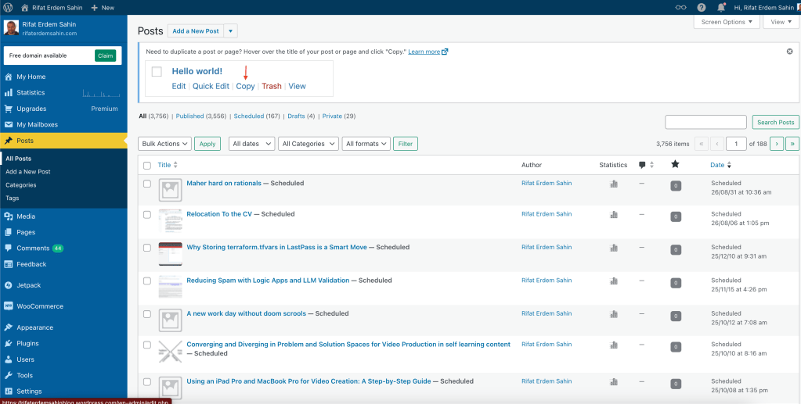
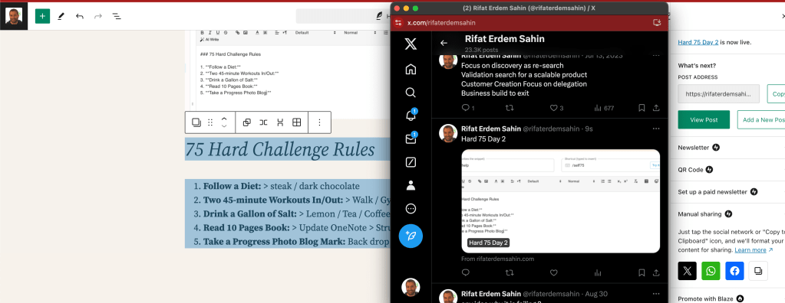

How I Replaced Buffer.com with WordPress Publish Automation and Manual Promotes to X.com

X

As a content creator, efficiency is key to managing my workflow effectively. For a long time, I relied on Buffer.com for scheduling posts to my social media accounts, particularly Twitter (now known as X.com). However, I realized I could streamline my process even further by automating my WordPress publishing and manually promoting my content on X.com. Here's how I made the switch and the benefits I've experienced since.
Why I Decided to Switch
Buffer.com is an excellent tool for social media scheduling, but I found myself needing more control over the publishing process on WordPress and the engagement on X.com. Here are the main reasons for my switch:
-
Cost Savings: Buffer.com offers great features but comes with a recurring cost. By automating directly through WordPress, I could eliminate this expense.
-
Better Integration with WordPress: Automating directly through WordPress allowed for a more seamless integration. I could publish content without needing an additional tool.
-
Improved Engagement: By manually promoting my posts on X.com, I could engage with my audience in real-time, tailoring my interactions to the specific content of each post.
Step-by-Step Guide to My New Process
-
Setting Up WordPress Automation: WordPress offers several plugins that can automate the publishing process to various social media platforms. After researching, I chose a plugin that could handle both scheduling and auto-publishing tasks. Here’s how I set it up:
-
Plugin Selection: I opted for the "Social Auto Poster" plugin. This plugin allows for automated sharing of new posts to multiple platforms, including X.com.
-
Configuration: After installing the plugin, I connected it to my social media accounts. The setup process was straightforward and involved generating API keys for X.com, which the plugin required to function properly.
-
Custom Scheduling: The plugin allows for scheduling posts directly from the WordPress dashboard, similar to Buffer.com. I set it up to automatically share new blog posts to X.com as soon as they are published.
-
Manual Promotion on X.com: While the automation handles initial postings, manual promotion is key for engagement. Here’s how I manage my posts:
-
Crafting Engaging Tweets: Instead of a generic auto-post, I craft a tweet tailored to the content. This often includes a compelling question or a call-to-action to encourage engagement.
-
Timing is Key: I promote my posts during peak engagement times on X.com, which are typically mid-morning and early evening for my audience.
-
Engaging with the Audience: After posting, I spend some time engaging with anyone who comments or retweets. This engagement is crucial for building relationships and increasing the reach of my content.
-
Analyzing Results: To measure the success of my new process, I use analytics tools to track engagement and traffic from X.com to my WordPress site. Here’s what I look at:
-
WordPress Stats: I use the built-in WordPress analytics to monitor which posts are performing well and driving traffic from X.com.
-
X.com Analytics: X.com’s analytics tool helps me see which tweets are getting the most engagement. This data allows me to refine my strategy over time, focusing on what resonates most with my audience.
The Benefits of My New Approach
Since making the switch, I've noticed several benefits:
-
Cost Efficiency: I no longer pay for Buffer.com, which reduces my monthly expenses.
-
Increased Engagement: Manually promoting my posts on X.com has led to more meaningful interactions with my audience. I’m able to respond to comments in real-time and engage in conversations that matter.
-
Simplified Workflow: Automating through WordPress means one less platform to manage. Everything is streamlined into one workflow, saving me time and reducing complexity.
Conclusion
Replacing Buffer.com with a combination of WordPress automation and manual promotion on X.com has been a game-changer for my content strategy. Not only have I saved money, but I’ve also seen increased engagement and a more streamlined workflow. If you're looking for a more hands-on approach to managing your content and engagement, consider making the switch. You might find it’s the perfect solution for your needs, too!
Feel free to reach out if you have any questions or need more details about my process!
🔗 Connect with me:
-
💼 LinkedIn: https://www.linkedin.com/in/rifaterdemsahin/
-
🐦 Twitter: https://x.com/rifaterdemsahin
-
🎥 YouTube: https://www.youtube.com/@RifatErdemSahin
-
💻 GitHub: https://github.com/rifaterdemsahin
Imported from rifaterdemsahin.com · 2024